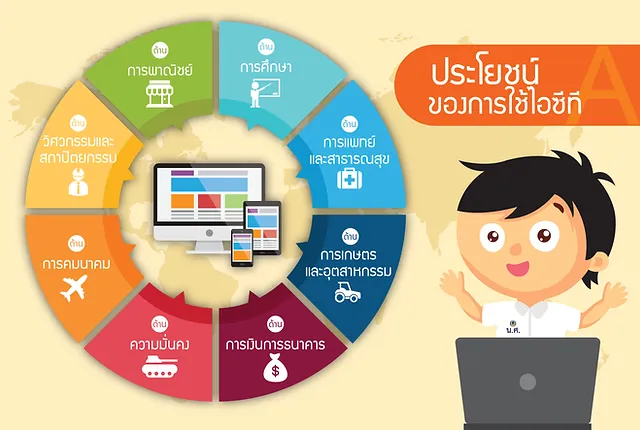

ความสำคัญของเทคโนโลยีสารสนเทศและการสื่อสาร
- การสื่อสาร มีส่วนในการพัฒนากิจกรรมต่าง ๆ ของมนุษย์ประกอบด้วย Communications media การสื่อสารโทรคมนาคม (Telecoms) และเทคโนโลยีสารสนเทศ (IT)
- เทคโนโลยีสารสนเทศและการสื่อสารประกอบด้วยผลิตภัณฑ์หลักที่มากไปกว่า โทรศัพท์และคอมพิวเตอร์ เช่น แฟกซ์ อินเทอร์เน็ต อีเมล์ ทำให้สารสนเทศเผยแพร่หรือกระจายออกไปในที่ต่าง ๆ ได้สะดวก
- เทคโนโลยีสารสนเทศและการสื่อสารมีผลให้การใช้งานด้านต่าง ๆ มีราคาถูกลง
- เครือข่ายสื่อสาร (Communication networks) ได้รับประโยชน์จากเครือข่ายภายนอกเนื่องจากจำนวนการใช้เครือข่าย จำนวนผู้เชื่อมต่อ และจำนวนผู้ที่มีศักยภาพในการเข้าเชื่อมต่อกับเครือข่ายนับวันจะเพิ่มสูงขึ้น
- เทคโนโลยีสารสนเทศและการสื่อสารทำให้ฮาร์ดแวร์คอมพิวเตอร์ และต้นทุนการใช้ IT มีราคาถูกลงมาก
